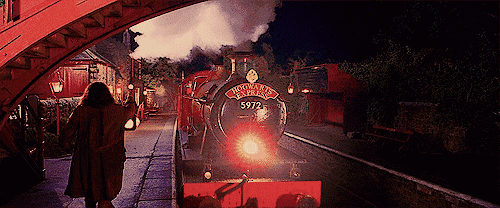
霍格沃兹特快列车
一辆虚构的魔法列车，这辆列车在伦敦与霍格沃茨之间运行。始发站是伦敦的国王十字车站的9¾站台，
麻瓜无法主动进入这个站台，巫师进入站台的方法是穿越第九和第十站台之间的隔墙。学校级长有专属车厢位于列车的前端。
列车隔间有可能是按照字母顺序排列，鼻涕虫俱乐部曾在列车尾部的C隔间聚会。
当列车到达终点站霍格莫德车站后，一年级新生会按照传统由海格带领坐船过湖到达霍格沃茨，
其他高年级学生则乘坐由夜骐拉的马车经正门到校。 一年级新生入学时，是坐船来到霍格沃兹的
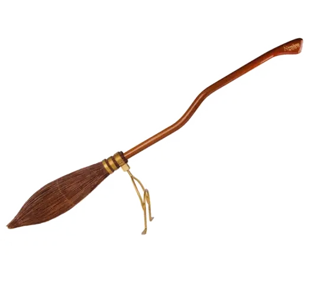
分院仪式
分院仪式（Sorting Ceremony）是每年霍格沃茨魔法学校新生都必须进行的重要仪式。
在大礼堂全校师生面前进行，由分院帽（Sorting Hat）负责将学生分到格兰芬多，赫奇帕奇，拉文克劳以及斯莱特林四个学院。分院帽是一顶磨得很旧，打着补丁，而且脏得要命的尖顶巫师帽，
原本属于格兰芬多创始人戈德里克·格兰芬多。
不过可别小看它，它可是充满智能、会思想的魔帽，
能看出学生具备何种才能，从而将学生分到适合他们的学院。
>
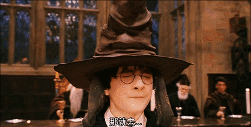
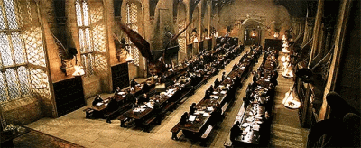
万圣节宴会
万圣节宴会 (Hallowe'en Feast)是霍格沃茨魔法学校在每年的10月31日举行的宴会。
礼堂中会被装饰成万圣节的主题：“一千只蝙蝠在墙壁和天花板上扑棱棱地飞翔，
另外还有一千只像一团团低矮的乌云，在餐桌上方盘旋飞舞，使南瓜肚里的蜡烛火苗一阵阵扑闪。”学校的幽灵也会在宴会的最后进行表演：
他们从墙上和桌子上突然出现，组成各种阵型表演滑行。由于万圣节宴会是霍格沃茨举行的大型宴会之一，大多数学生对此都非常期待
>
圣诞宴会
圣诞假期 (Christmas holidays)是霍格沃茨魔法学校在圣诞节和新年期间的一段假期，
学生们可以自愿选择乘坐霍格沃茨特快列车回家过圣诞节，
还是留在霍格沃茨城堡。在这段通常为期两周左右的假期中，学校不会给学生安排课程。
>

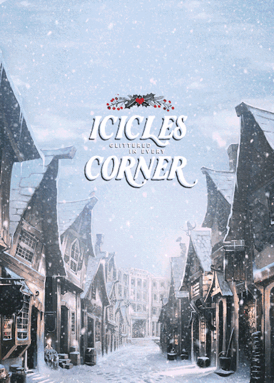
霍格莫德村
霍格莫德村是英国唯一的一个全巫师村落，没有麻瓜居住。这个村庄以其独特的茅草覆盖屋顶的村舍和商店而闻名，是一个美丽而风景如画的小村子。每逢假期，村里的树上都会挂满施了魔法的蜡烛，增添了一份魔法世界的节日气氛。
霍格莫德村位于霍格沃茨魔法学校附近的一个大湖旁边，霍格沃茨特快列车的终点站也设在村里，只有满三年级才能来到这里，学生们的新学年都是从那里开始的。沿着湖岸有一条小路从车站直通霍格沃茨城堡。
霍格莫德村不仅是霍格沃茨学生周末的旅游目的地，也是魔法世界的商业中心和休闲场所。在这里，巫师们可以购买斗篷、魔杖、书本、飞天扫帚及整蛊玩具、零食等小玩意。村内有许多著名的商店和酒吧，如三把扫帚酒吧、猪头酒吧、蜂蜜公爵糖果店等。
>
三强争霸赛
三强争霸赛是欧洲三大魔法学校之间举行的魔法比赛：霍格沃茨魔法学校、德姆斯特朗学院和布斯巴顿魔法学院，每五年举行一次，每所学校都有一名代表参赛。
被选中的冠军参加三项任务的比赛——传统上由竞争学校的校长或女校长评判——旨在测试魔法能力、智力和勇气。冠军们争夺赢得比赛的荣誉和荣耀，争夺三强争霸赛杯和金钱奖励。第一届锦标赛于 13 世纪末左右举行。
该比赛因极其危险而臭名昭著：许多冠军在比赛中死亡，由于死亡人数众多，它在 1792 年或之后的某个时候停止了。
>
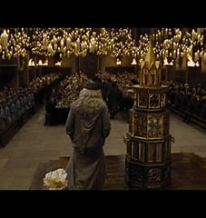
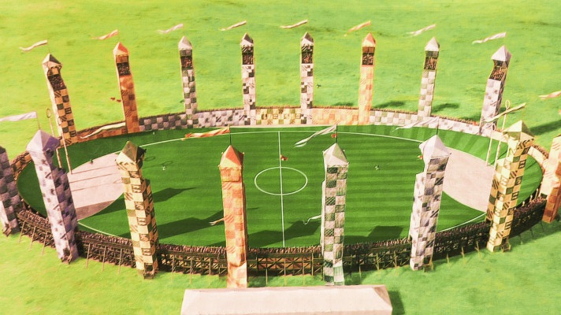
魁地奇
魁地奇 (Quidditch)是一种在飞天扫帚上进行的巫师体育运动。这个运动在男女巫师中间非常流行，按照鲁伯·海格的说法，这种运动就像麻瓜世界中的足球一样深受欢迎[1]。
这项运动的目的是获得比对手更多的分数。在比赛中，每进一个球可以为球队挣得十分，
而抓住金色飞贼则可以得到一百五十分。同时，只有当金色飞贼被抓住，或者经过两支球队的队长同意的情况下，一场魁地奇比赛才能结束。
如果飞贼一直没有被抓到，一场魁地奇比赛可能会进行很多天。据奥利弗·伍德所说，魁地奇比赛时间的最长记录是三个月。
>
学院杯
学院杯 (House Cup)时霍格沃茨的一个年度奖项。每学年结束时，学院杯会颁发给学院分最高的学院。在一学年中，
教师和级长有权为不同的学院加减学院分。学生的出色表现（比如正确回答问题等）会给自己的学院加分，而行为不端或违反校规则会减分。
赢得魁地奇杯冠军的学院会得到额外的加分。
霍格沃茨城堡门厅中的学院分沙漏会实时记录每个学院的分数。
代表不同学院的四个沙漏中分别装着不同的宝石：格兰芬多沙漏中为红宝石，拉文克劳沙漏中为蓝宝石，斯莱特林为绿宝石，而赫奇帕奇的沙漏中则为钻石。
>
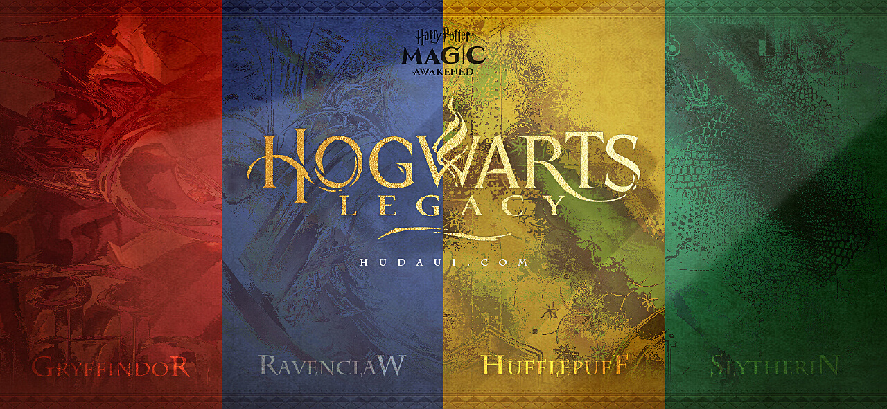
 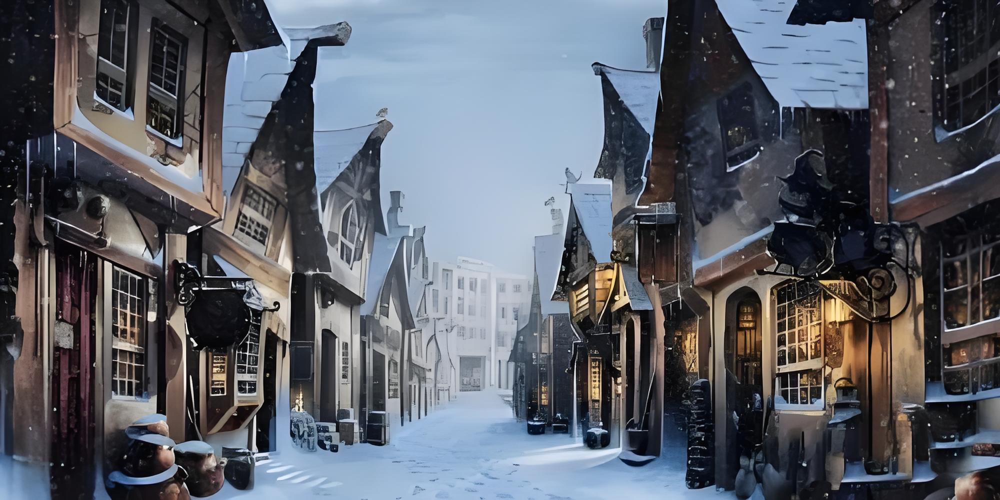
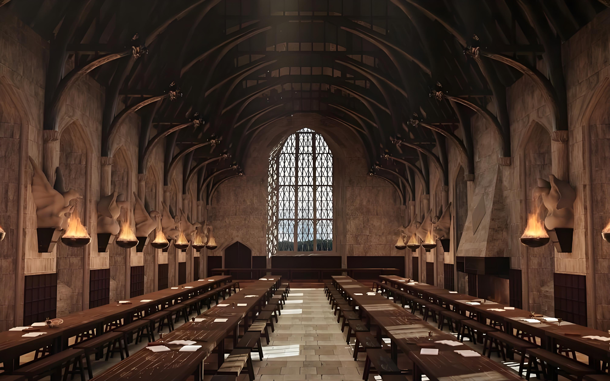
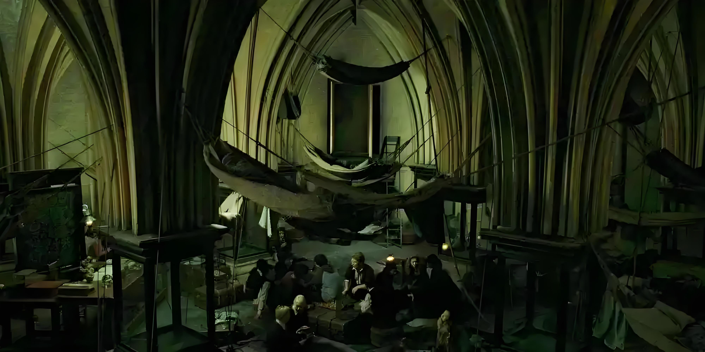
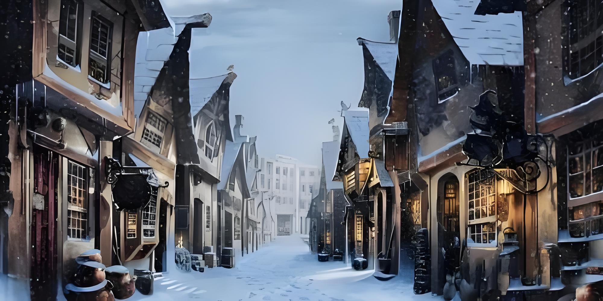
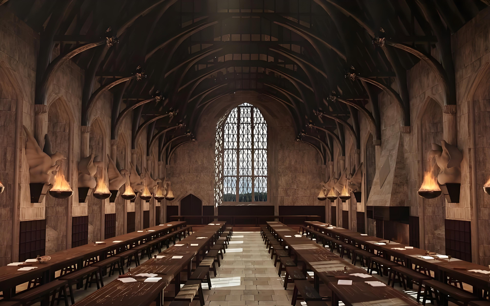
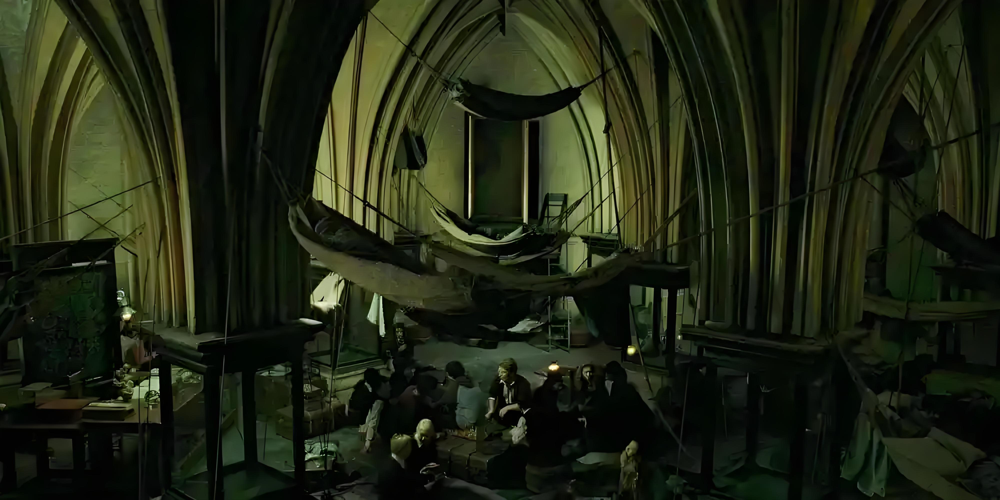